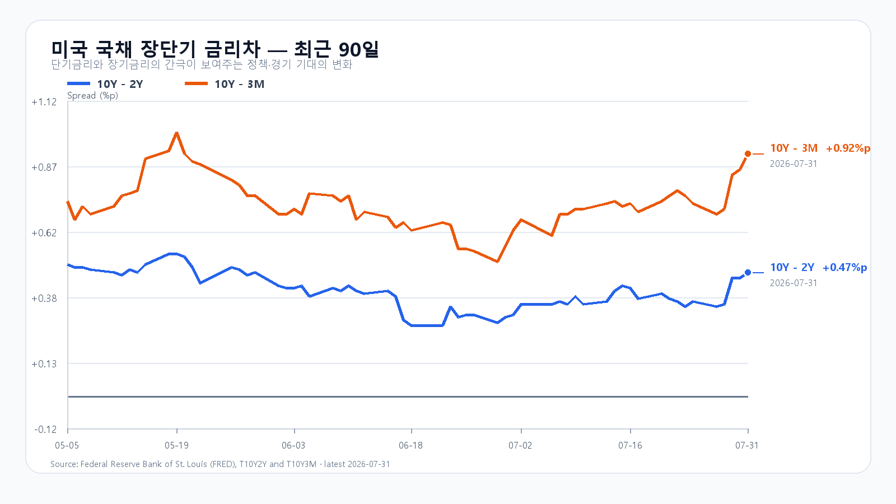
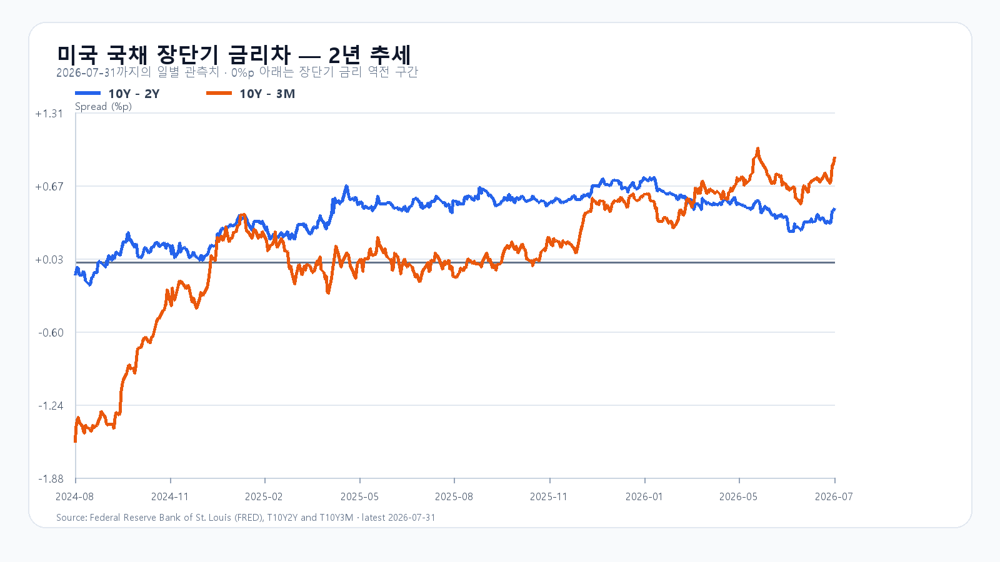

오늘의 한 문장
오늘 하락은 한국 경제 전체의 위험보다 삼성전자·SK하이닉스와 지수형 바스켓의 포지션 축소에 가깝습니다. 원화는 강해졌고 유가는 내렸지만, 외국인은 현물과 선물을 함께 팔았고 비차익 프로그램 매도는 2조원에 육박했습니다.
삼성전자는 8.19%, SK하이닉스는 7.51% 하락했습니다. 두 종목이 지수를 끌어내리는 동안 KOSPI 상승 종목은 447개, 하락 종목은 442개로 거의 같았고 KOSDAQ은 2.48% 올랐습니다. 숫자만 보면 폭락장이지만, 종목을 펼쳐 보면 대형 반도체 집중 충격입니다.
지수 저점보다 먼저 확인할 것은 외국인 현·선물 매도와 비차익 바스켓 매도가 함께 줄어드는가입니다.
지수 5% 하락과 시장 폭의 모순
14시 30분 KOSPI는 6,281.60으로 4.76% 하락했습니다. 저점은 6,230.35였습니다. KOSPI200은 5.33% 하락해 대형주 충격이 더 컸고, KODEX 레버리지는 93,985원으로 15.29% 내렸습니다.
| 항목 | 현재 | 시가 / 저가 |
|---|---|---|
| KOSPI | 6,281.60 · -4.76% | 6,358.27 / 6,230.35 |
| 삼성전자 | 241,000원 · -8.19% | 248,000 / 238,500 |
| SK하이닉스 | 1,589,000원 · -7.51% | 1,642,000 / 1,563,000 |
| KODEX 레버리지 | 93,985원 · -15.29% | 100,005 / 92,440 |
삼성전자와 SK하이닉스는 저점에서 각각 1.1%, 1.7%가량 반등했지만 시가는 회복하지 못했습니다. 반면 KOSPI 전체 상승·하락 종목 수는 균형이고 KOSDAQ은 장중 매수 사이드카 뒤에도 강세를 유지했습니다. 자금이 시장에서 모두 사라진 것이 아니라 초대형 반도체에서 중소형주로 이동한 흔적입니다.
외국인은 현물과 선물을 함께 줄였다
외국인은 KOSPI 현물 2조5,489억원과 KOSPI200 선물 7,313계약을 순매도했습니다. 기관도 현물 1조5,188억원을 팔았고, 그중 금융투자 순매도가 1조5,853억원이었습니다. 개인은 3조9,707억원을 순매수해 물량을 받아냈습니다.
프로그램에서는 차익 매도 1,198억원보다 비차익 매도 1조9,747억원이 압도적이었습니다. 선물 베이시스 하나로 설명되는 거래보다 ETF·인덱스 바스켓과 패시브성 위험축소의 색깔이 강합니다. 기관은 현물을 팔면서 선물을 8,331계약 순매수했습니다. 현물 바스켓을 줄이고 선물로 지수 노출을 대체했을 가능성이 있지만, 주문 목적은 공개되지 않아 해석으로 남겨둡니다.
Micron이 남긴 종가의 경고
금요일 미국장에서 가장 중요한 숫자는 Nasdaq의 1.0% 상승이 아니라 Micron의 장중 경로였습니다. AP에 따르면 Micron은 장 초반 6.4% 상승했다가 장중 6.5% 하락했고 5.9% 하락으로 마감했습니다. 약 12.9%포인트를 되돌린 뒤 저점 가까이 끝난 것입니다.
같은 날 Amazon은 15.3% 급등했습니다. Amazon 공식 실적에서 AWS 매출은 전년 대비 37% 늘었고, AI와 자체 칩 사업은 각각 연환산 매출 250억달러를 넘어섰습니다. AI 인프라 수요는 강했지만 메모리 주식에서는 반등 물량을 현금화하려는 힘이 더 컸습니다.
최근 수급의 구조적 배경에는 레오폴드 아심브레너의 Situational Awareness가 있습니다. Axios는 이 펀드가 AI주 손실 뒤 공개주식 포트폴리오를 Citadel에 매각했다고 보도했습니다. 펀드 전체 폐쇄나 파산, 최종 손실과 마진콜 규모는 확인되지 않았습니다. 이 사건은 오늘의 새 악재라기보다 최근 AI·메모리주 가격에 강제 포지션 축소가 섞였음을 보여주는 사례입니다.
메모리 공급 부족은 더 선명해졌다
주식과 달리 실물 가격은 올랐습니다. TrendForce가 8월 3일 12시 KST에 갱신한 현물가에서 DDR5 16Gb는 51.000달러로 0.07%, DDR4 16Gb는 85.707달러로 0.57% 상승했습니다. DDR3 4Gb도 0.20% 올랐습니다.
| 품목 | 평균가 | 당일 |
|---|---|---|
| DDR5 16Gb 4800/5600 | $51.000 | +0.07% |
| DDR4 16Gb 3200 | $85.707 | +0.57% |
| DDR4 8Gb 3200 | $42.112 | 보합 |
| DDR3 4Gb | $13.838 | +0.20% |
HBM과 서버용 제품이 웨이퍼를 먼저 가져가면서 일반 DDR4까지 공급 압력을 받는 구조입니다. SK하이닉스는 약 10개 고객과 장기공급계약을 확정했고 추가 요청이 생산능력을 웃돈다고 밝혔습니다. 삼성전자도 글로벌 데이터센터 고객 5곳과 장기계약을 확보했다고 설명했습니다. 고객명과 개별 금액·물량은 공개되지 않았습니다.
Apple의 실적 설명도 같은 부족을 다른 각도에서 보여줬습니다. 메모리와 부품 공급 제약은 공급사에는 가격 결정력을 주지만, 스마트폰·PC 업체에는 원가와 판매가격 부담을 줍니다. 공급 부족이라는 한 사건이 메모리 업체의 장기 이익에는 호재, 소비자 기기 수요와 오늘 주가에는 부담으로 동시에 작동할 수 있습니다.
NAND 현물가는 7월 20일 이후 공개 갱신이 없어 오늘 값처럼 쓰지 않았습니다. 마지막 공개 흐름은 산업·자동차용 SLC/MLC 강세와 소비자 TLC 혼조였습니다. 날짜가 다른 숫자를 한 표에 섞지 않는 것이 현재 수급을 과장하지 않는 방법입니다.
원화와 유가는 왜 방어하지 못했나
달러/원은 약 1,430원으로 전일보다 0.7%가량 낮았습니다. 주가가 5% 가까이 내리는데 원화가 강해지는 조합은 외화유동성 부족이나 한국 신용위험이 중심인 하락과 다릅니다.
AP는 트럼프 대통령이 대이란 추가 공격을 보류하면서 WTI와 Brent가 아시아 시간 약 5% 하락했다고 전했습니다. 유가 하락은 한국의 수입물가와 무역수지, 미국 장기금리에 모두 완충재입니다. 다만 공격 보류는 종전 합의가 아니어서 지정학 위험이 끝난 것은 아닙니다.
환율과 유가라는 두 방어막이 생겼는데도 반도체 매도가 멈추지 않았습니다. 오늘 가격을 움직인 우선순위가 매크로보다 포지션과 바스켓 수급에 있었기 때문입니다. 이 완충재들은 낙폭을 바로 되돌리기보다, 외국인과 프로그램 매도가 줄어들 때 반등이 이어질 환경을 만들어 줍니다.
미 국채 금리차가 보여주는 부담
미 재무부 7월 31일 종가에서 3개월물은 3.83%, 2년물은 4.28%, 10년물은 4.75%였습니다. 10Y-2Y는 +0.47%포인트, 10Y-3M은 +0.92%포인트로 확대됐습니다.
이번 확대는 단기금리가 내려서가 아니라 10년물이 더 빠르게 오른 베어 스티프닝입니다. 경기침체 신호 완화보다 장기 할인율 상승의 의미가 강합니다. AI 수요가 좋아도 10년물 4.75%는 반도체 주가가 좋은 실적을 온전히 반영하기 어렵게 만드는 제약입니다.


이번 주 확인 순서
| 한국시간 | 일정 | 확인할 것 |
|---|---|---|
| 8/3 23:00 | 미국 7월 ISM 제조업 | 신규주문·가격과 10년물 반응 |
| 8/4 08:00 | 한국 7월 CPI | 6월 3.2%에서 둔화하는지 |
| 8/4 23:00 | 미국 6월 JOLTS | 채용과 임금 압력 |
| 8/5 23:00 | 미국 7월 ISM 서비스업 | 서비스 물가·고용 |
| 8/6 08:00 | 한국 6월 국제수지 | 원화와 반도체 수출 |
| 8/7 21:30 | 미국 7월 고용보고서 | 이번 주 최대 금리 변수 |
ISM 공식 일정상 오늘 밤 제조업 지표가 첫 관문입니다. 신규주문은 버티고 가격지수가 과열되지 않는 조합이 반도체에 가장 편합니다. BLS 공식 일정상 금요일 고용보고서가 이번 주 금리 방향의 본게임입니다.
마감 시나리오와 기준선
외국인 현·선물 매도는 남지만 6,230 저점과 균형적인 시장 폭이 추가 하락을 완충합니다.
비차익 매도가 줄고 6,358 시가를 회복해야 합니다. 삼성전자 또는 SK하이닉스의 시가 회복이 필요합니다.
6,230과 두 반도체 대형주의 장중 저점이 함께 이탈하면 강제 수급이 한 번 더 확대될 수 있습니다.
KODEX 레버리지의 1차 지지는 92,440원, 흐름 복원 기준은 100,005원 시가입니다. 많이 내렸다는 사실만으로 저점으로 보지 않습니다. 외국인 현·선물 동반 매도 완화, 비차익 매도 축소, 삼성전자·SK하이닉스 시가 회복 중 최소 두 가지가 확인돼야 공격 점수를 높일 수 있습니다.
오늘 판단은 공격 20, 관망 60, 방어 20입니다. 실물 메모리는 강하지만 주식 수급은 아직 바닥을 확인하지 못했습니다.
자료 기준
한국 시세와 수급은 8월 3일 14:30 KST 기준이며, Naver Finance가 제공하는 KRX 장중 데이터를 반영했습니다. 미국 주가와 유가는 AP, 기업 실적은 Amazon·SK하이닉스 공식 자료, 메모리 현물가는 TrendForce, 국채는 미 재무부와 FRED, 일정은 ISM·BLS 공식 캘린더를 사용했습니다. 기사 속 링크에서 각 원자료를 확인할 수 있습니다.